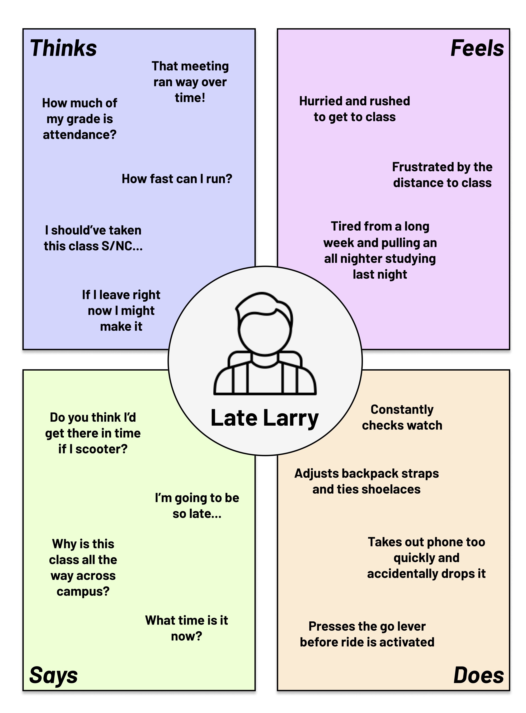
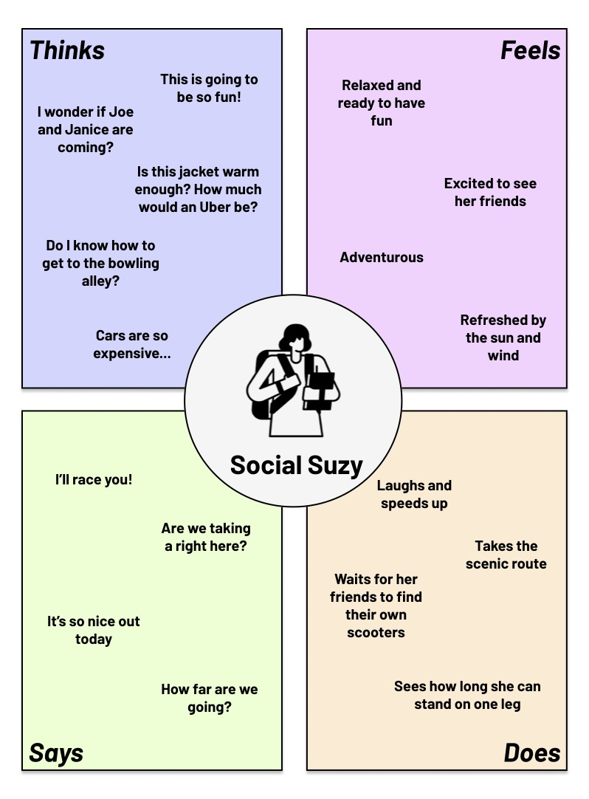

Larry is a college student who is running late for a class across campus. The Spin Scooter interface allows Larry to quickly connect his ride to the app, operate the scooter and monitor his speed. Larry represents users who are in a rush and looking for a quick and easy mode of transportation.
Suzy is a young woman who is looking for a fun and inexpensive way to travel with her sister to meet her friends at a bowling alley. The Spin Scooter interface allows her to easily connect the ride to her app, operate the scooter at the speed she desires, and monitor the battery of the scooter. Suzy represents users who's priority is a inexpensive and fun way to travel to a given destination.
Larry just got out of a meeting that ran over time. He is now running late to his class that is across campus.
Larry sees a spin scooter and debates running to class or riding the spin scooter.
Larry takes out his phone, opens the Spin app and scans the QR code on the top of the handlebar on the scooter.
Looking at the screen on the scooter Larry checks that the scooter has enough battery to get him to his class.
He then begins his ride on the Spin app and gets on the scooter.
Using the brakes and the acceleration lever on the user interface on the handlebar Larry navigates to class.
Larry also checks his current speed on the interface to make sure he is complying with street safety laws.
Larry ends his ride and arrives to class on time!